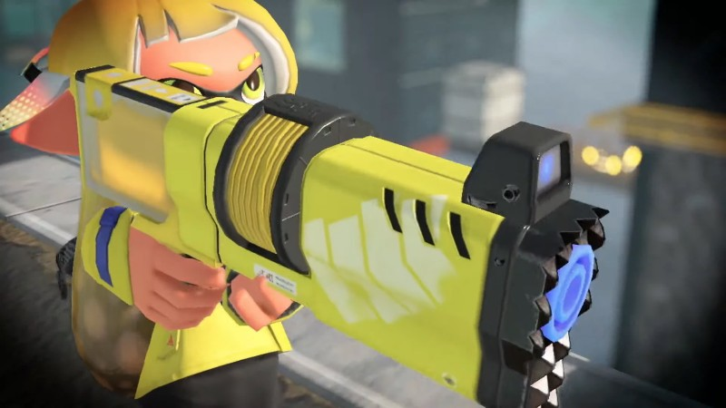

Kena: Bridge Of Spirits Review & Guardians Of The Galaxy Impressions | GI Show
We don't mean to brag, but Brian Shea got to play Marvel's Guardians of the Galaxy ahead of its October 26 release! In today's show, we discuss how the character interactions felt and whether the game's writing fits the series' iconic characters. Shea also breaks down how the game involves Rocket, Gamora, Drax, and Groot while players only have complete control over Star-Lord.
It's another massive week in the world of video games. We kick The Playlist off with Alex Van Aken and Ben Hanson breaking down their time playing Kena: Bridge of Spirits, developer Ember Lab's introductory title that has us impressed with its gorgeous visuals and adorable characters. Next up Liana regales us with her time playing Life is Strange: True Colors and tells us why it's her current game of the year. Finally, Stadnik wraps up the segment with him gushing about Deathloop and how the game empowers players and makes them feel smart through its open structure.
The Intitiative Teams Up With Crystal Dynamics For Perfect Dark
The Initiative, Microsoft’s studio developing the new Perfect Dark, has announced a new partnership with another big studio outside its parent company’s umbrella. In a tweet this evening, it was revealed that The Initiative has enlisted the services of Crystal Dynamics to work on this new iteration of the classic Rare shooter.
“Perfect Dark update! We are partnering with Crystal Dynamics, the world class team behind character-driven games such as Tomb Raider, to bring this first-person spy thriller to a new generation,” reads the announcement tweet from The Initiative’s account. Why The Initiative has brought Crystal Dynamics on board to help with developing Perfect Dark is unknown outside of this brief statement in a second tweet, saying, “The teams couldn’t pass up a chance to work together. We’re still early in development, but incredibly excited to use this unique opportunity to deliver on the vision for Perfect Dark!”
Mammals Are Reemerging In New Splatoon 3 Trailer

Today's 40-minute-long Nintendo Direct held tons of announcements for fans of the company's franchises like Kirby, despite some of the news slipping out a little before the presentation. The penultimate slot in today's show was filled by Splatoon 3, which provided details on the upcoming title's setting, main and special weapons, and a hair-raising new focus for the story.
Nintendo revealed Splatoon 3 is coming to Switch in 2022 during its February Direct. There is no update to that information as today's showcase repeated the 2022 release window with no hint about the date fans can expect to get their hands on the title. The presentation did promise that more information was on the way and that we could "look forward to future updates." However, the Nintendo Direct did give us a little bit more information on what content to expect in the game. After an action-packed trailer, which you can see above, a "squid researcher" – complete with an official-looking white lab coat – took the stage to break down various elements seen in the footage